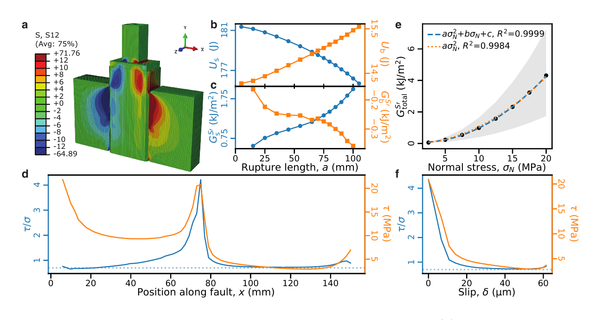

Paper Information
Journal: Earth and Planetary Science Letters
DOI: 10.1016/j.epsl.2026.120283
Authors: Chun-Yu Ke, Gauss T. Chang, Gregory C. McLaskey, David S. Kammer, and Chris Marone

Abstract
Understanding how earthquake energy budgets scale from laboratory to natural faults remains a fundamental challenge in earthquake physics. Laboratory experiments report fracture energies consistent with classical friction, yet seismological observations show that breakdown work scales strongly with slip, and the relationship between these two quantities remains unclear. Here we show that this discrepancy reflects two genuinely different physical quantities: the near-front dissipation governed by rupture-tip processes, which we use as a proxy for fracture energy because these small ruptures sustain no K-dominant field, and the system-scale breakdown work dominated by nonlocal elastic unloading which includes the loading column in our experiments. We conducted stick-slip experiments on 15-cm long granite faults under normal stresses of 1-20 MPa in a double-direct-shear configuration. A dense strain-gauge array tracked rupture propagation, enabling near-front dissipation estimates via cohesive zone modeling, while finite element simulations quantified energy partitioning between the fault and loading system. The near-front dissipation remains low (< 10 J/m2) and scales roughly linearly with normal stress, consistent with classical friction. In contrast, total breakdown work scales quadratically with slip, exceeding the near-front dissipation by over an order of magnitude. Finite element simulations confirm that elastic unloading of the compliant loading column dominates this energy release. Normal stress heterogeneity on the lab fault produces additional weakening, after the rupture has reached maximum size, without additional dissipative mechanisms. These results demonstrate that apparent breakdown work scaling in laboratory earthquakes can arise from nonlocal elastic effects rather than intrinsic fault weakening. Our work provides a framework for distinguishing local near-front dissipation from system-scale energy release and breakdown work when extrapolating laboratory results to natural faults.
Download
Paper PDF: Download PDF